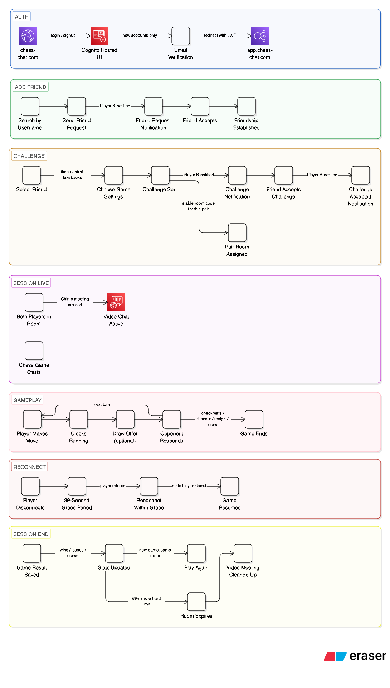
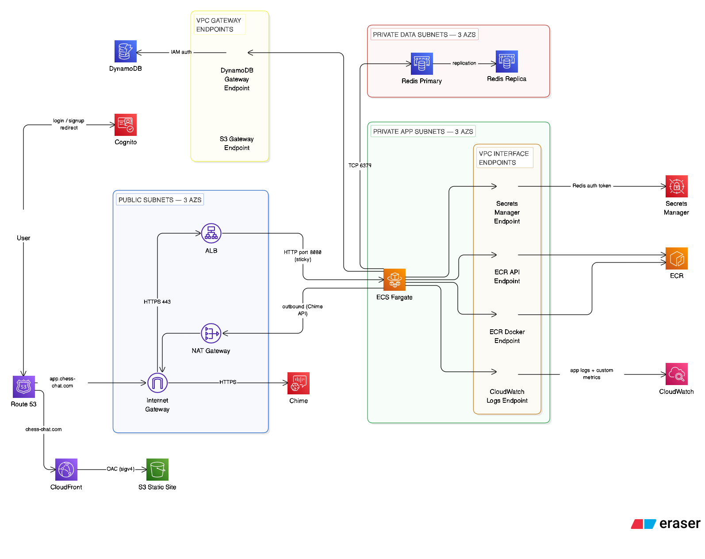

Flagship Project
Real-time video chess platform on AWS, defined in Terraform and deployed with GitHub Actions.
The environment is no longer deployed. chess-chat.com and
app.chess-chat.com do not resolve. I tore the stack down after running the
cost exercise below. The March bill was $212.25, and roughly $163 of that
was fixed, always-on infrastructure that billed at near-zero usage: VPC interface
endpoints, the NAT Gateway, Redis (primary and replica) and the ALB. None of these cost
less when nobody is playing, so keeping a live link running was not worth the cost.
The demo video below shows the working product, the
repository
holds the full Terraform, and the
cost model itemises where every dollar went.
ChessChat lets two friends play chess against each other over live video. There is no matchmaking queue and no playing against strangers. Users invite their friends to play.
The gameplay model follows video-call session semantics. Both players enter a video room that stays open for the session, and they can play as many sequential chess games as they want within the 1-hour room window. Each game uses a 5-minute chess clock per player. When both players leave, the room is torn down automatically and its Chime meeting is deleted, so no attendee stays connected and billing.
The diagram below shows the logic flow for each area of the application (room creation, the video session, chess gameplay and session teardown) as separate flows rather than one combined graph.

This is a functional demo of the core product: video chat and chess gameplay working together in the browser. It does not walk through the infrastructure. The AWS architecture is covered in the sections below and in the technical deep-dive.
The platform uses a split-host architecture. The static marketing and
auth site (chess-chat.com) runs on CloudFront and S3, and the gameplay
runtime (app.chess-chat.com) runs on ECS Fargate behind an ALB. I kept them
separate because they have different scaling, caching and security requirements.
chess-chat.com app.chess-chat.com
(CloudFront + S3) (ALB → ECS Fargate)
Static landing / auth Authenticated gameplay runtime
│ │
└──────── Cognito ─────────────┘
│
┌──────────────┼──────────────┐
│ │ │
ElastiCache DynamoDB Chime SDK
Redis (Users, (Video)
(Room/game Games,
state) Social)
The underlying network is a three-tier VPC across three Availability
Zones in us-east-1. Public subnets host the ALB and NAT Gateway. Private
app subnets host Fargate tasks with no public IPs. Private data subnets host Redis, with
no inbound path from the internet. Security groups only allow traffic in one direction
at each layer: internet → ALB → Fargate → Redis.

Each of these was a deliberate trade-off, documented in Architecture Decision Records in the repo.
The static marketing and auth site runs on CloudFront and S3, and the gameplay runtime runs on ECS Fargate behind an ALB. The static site is cached at the CloudFront edge and needs no compute, while the gameplay runtime runs as containers on ECS. Keeping them apart also means the ALB only handles authenticated gameplay traffic. Both are deployed by the same manually triggered GitHub Actions workflow.
The VPC spans three AZs, but outbound traffic routes through one NAT Gateway. If that AZ
fails, the private subnets lose outbound internet access. I accepted this to save money,
as each NAT Gateway costs about $35 per month. The Terraform VPC module accepts a
nat_gateway_mode variable, so switching to one NAT Gateway per AZ is a
single variable change rather than a network redesign.
Rooms exist only while players are connected. A 12-second reconnect grace period handles accidental disconnects without triggering teardown. The Chime meeting is only created once both players have joined the room. Room codes are not generated per session. Each friend pair has one persistent room code, stored in DynamoDB, which is reused whenever the two players choose to play again.
Active room and game state is real-time data, so it lives in Redis. When a game finishes, its data is written to DynamoDB. DynamoDB receives one transactional write per completed game, regardless of how many moves were played.
Chime SDK gave me a fast path to working video, and I also wanted to learn the service. If I continued the project, I would move to native browser WebRTC with a self-hosted Coturn server, which replaces per-minute billing with a fixed EC2 cost.
I built the platform in dependency order, because some services rely on others already existing. Each layer made the next set of services possible. The VPC and networking had to exist before any compute could be placed inside it. ECS and the container environment came next, since the application itself runs there. The chess engine and game logic were built on top of that working compute layer, and the video integration followed once the core session model was stable.
1 · VPC & Networking
Three-tier VPC across three AZs, with public, private app and private data subnets. Route tables, security groups, a NAT Gateway, and VPC endpoints for ECR, CloudWatch, Secrets Manager and DynamoDB.
2 · Data Layer
DynamoDB tables for users, games, and the social graph. ElastiCache Redis cluster with multi-AZ replication.
3 · Auth
Cognito user pool with email/password and Google OAuth. The auth surface (chess-chat.com) is a custom single-page website. It handles login and signup, email verification, password reset, the OAuth callback and session handoff. JWT tokens are used for both REST and WebSocket authentication.
4 · Compute & Delivery
ECS Fargate service behind an ALB. CloudFront + S3 for the static marketing and auth site. Route 53 for DNS.
5 · CI/CD
GitHub Actions pipeline. Tests (backend, frontend, Terraform) run as required PR checks, and branch protection enforces all three on main with no admin bypass. Deployment is a separate, manually triggered workflow (workflow_dispatch): ECR image tagged by commit SHA, ECS rolling deploy, then static auth assets synced to S3 with CloudFront invalidation. I kept deploys manual deliberately. I was the only operator and the infrastructure was paid and always on, so I wanted to choose when the running stack changed. On a team, I would auto-deploy to a staging environment and keep a manual gate in front of production.
6 · Chess Engine
WebSocket server handling room creation, game state and real-time move broadcast. Moves are validated client-side with chess.js and again server-side with chess.js, which is the authoritative source of truth.
7 · Video
Chime SDK integration for managed WebRTC. The server creates a meeting on room activation and issues attendee tokens to both players. Video runs independently of the chess session, so a disconnect from one does not affect the other.